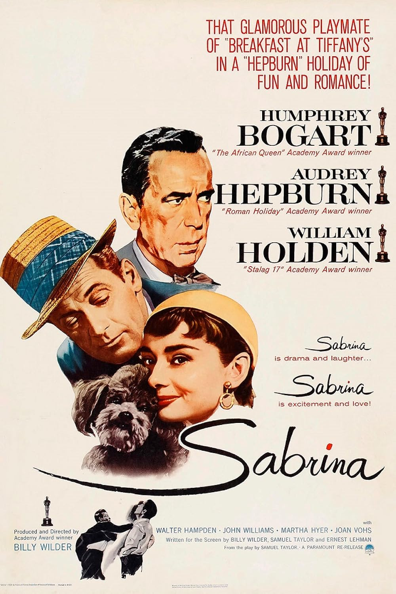

Sabrina
27th Academy Awards
(Oscars 1955)
6 Nominations, 1 Award
| Nominations | ||
|---|---|---|
| Category | Nominees | Result |
| Actress | Audrey Hepburn | Nominated |
| Directing | Billy Wilder | Nominated |
| Writing (Screenplay) | Billy Wilder, Ernest Lehman, and Samuel Taylor | Nominated |
| Cinematography (Black-and-White) | Charles Lang, Jr. | Nominated |
| Art Direction (Black-and-White) | Hal Pereira, Ray Moyer, Sam Comer, and Walter Tyler | Nominated |
| Costume Design (Black-and-White) | Edith Head | Won |